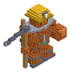
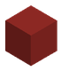
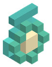

Bestiario › Jefe


Variantes de color
Gólem Supervisor de Hematita
Coloso de Hematita de la Mina
Hostil Bípedo Jefe
Capataz de las minas olvidadas: un gólem de hematita roja con casco de minero y lámpara de pirita, correas de hierro de vía, andamios a la espalda, un talismán de turquesa y un pico enorme.
32Nivel
86,2Vida
7,03Daño
25Armadura
0Regeneración
3Velocidad
Dónde aparece
| Jefe de mazmorra | Minas Olvidadas de Hematita (nivel 28) |
|---|
Efectos de sus ataques
- Empuje · 12 (al golpear)
- Aturdimiento · 2 s (al golpear)
Botín
| Objeto | Cantidad | Probabilidad |
|---|---|---|
 Pico de Acero al Carbono del Minero Pico de Acero al Carbono del Minero | 1 | 100 % |
 Lingote de Hematita Pura | 3 – 5 | 100 % |
 Talismán de Turquesa | 1 | 100 % |
Combate de jefe
Escala ×1 · radio de la arena 48 bloques.
- Por debajo del 40 % de vida: daño ×1,4 — «¡El Supervisor derrumba el techo de la mina!»
Archivo de datos: mods/mobs/golem_supervisor.json · tamaño del vóxel 0,2 m · cuerpo de 3 × 4 bloques